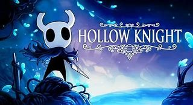

La actualidad de los videojuegos es vibrante y emocionante, con constantes innovaciones tecnológicas, lanzamientos de juegos de alto perfil y evolución en la cultura de los videojuegos. Aquí hay un resumen de algunos aspectos destacados de la actualidad de los videojuegos:
Nuevas consolas y tecnología: La llegada de nuevas consolas de próxima generación, como PlayStation 5 y Xbox Series X/S, ha llevado la experiencia de juego a nuevos niveles con gráficos impresionantes, tiempos de carga rápidos y capacidades de juego mejoradas.
Juegos AAA: La industria de los videojuegos continúa produciendo juegos AAA de alta calidad en una variedad de géneros. Títulos como "Cyberpunk 2077", "Assassin's Creed Valhalla", "The Last of Us Part II" y "Halo Infinite" han generado grandes expectativas y han sido aclamados por la crítica.

Evolución de los eSports: Los deportes electrónicos (eSports) están en auge, con competiciones profesionales en juegos populares como "League of Legends", "Counter-Strike: Global Offensive" y "Fortnite". Los eventos de eSports atraen a millones de espectadores en línea y llenan estadios en todo el mundo.
Juegos independientes (Indie): Los juegos indie siguen siendo una parte importante de la industria, ofreciendo experiencias únicas y creativas que a menudo exploran temas y mecánicas fuera de lo común. Títulos como "Hades", "Among Us" y "Spiritfarer" han sido éxitos destacados en esta categoría.
Realidad virtual (VR): La realidad virtual sigue siendo un área emocionante en la industria de los videojuegos, con avances en tecnología y contenido que ofrecen experiencias inmersivas y envolventes para los jugadores. Juegos como "Half-Life: Alyx" y "Beat Saber" han demostrado el potencial de la VR para cambiar la forma en que jugamos.
Crecimiento del juego móvil: Los juegos móviles continúan siendo extremadamente populares, con millones de jugadores que disfrutan de una amplia variedad de títulos en sus dispositivos móviles. Juegos como "Genshin Impact", "PUBG Mobile" y "Among Us" han dominado las listas de descargas y generan grandes ingresos en la industria.
¡Enhorabuena por explorar nuestra apasionante página dedicada a los videojuegos, donde hemos intentado capturar la esencia y la diversidad de este fascinante mundo digital! Desde clásicos atemporales hasta las últimas innovaciones, hemos presentado una amplia gama de experiencias que abarcan todos los géneros, desde la acción trepidante hasta la narrativa profunda, pasando por la estrategia desafiante y la aventura inmersiva. Ahora que has tenido la oportunidad de sumergirte en este vasto universo de entretenimiento interactivo, nos encantaría conocer tu perspectiva. ¿Qué te ha parecido nuestra selección de juegos? ¿Cuál es tu opinión sobre el impacto cultural y social de los videojuegos? ¿Qué experiencias personales o recuerdos te han dejado marcado? Los videojuegos no solo son una forma de entretenimiento; son una ventana a mundos imaginarios, un medio de expresión artística y una plataforma para la conexión humana. Nos encantaría escuchar tus pensamientos, reflexiones y emociones sobre este fenómeno que ha dejado una huella indeleble en nuestras vidas. Así que tómate un momento para compartir tu opinión con nosotros. Estamos ansiosos por conocer tus ideas y continuar esta conversación sobre los videojuegos, un medio que sigue evolucionando y sorprendiéndonos cada día. Gracias por ser parte de esta comunidad de jugadores y por compartir tu pasión por los videojuegos con nosotros. ¡Esperamos con entusiasmo leer tus comentarios y continuar explorando juntos el maravilloso mundo de los videojuegos!